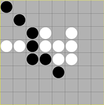
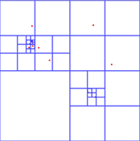

Donald H. House
Teaching
My teaching over the past twenty years has been largely devoted to topics in computer graphics, particularly courses that support our graduate programs in digital production and and in graphics and visualization research. Below, each course title and image contain a link that will take you to the webpage for my latest rendition of the course. Each webpage includes a detailed course schedule, links to supporting papers and code, and all assignments.
 DPA 4010 / 6010 Technical Foundations of Digital Production II
The mathematical and algorithmic foundations of computer graphics. Spatial data structures, object oriented programming in C++, mathematics for graphics, 3D graphics API. This is the second of two courses intended to provide technical foundations for DPA students coming from the art or design fields. For undergraduates, it provides a focused introduction to the technical foundations needed for advanced study in digital production.
CPSC 4040 / 6040 Computer Graphics Images
The theory and practice behind the generation, and manipulation of two-dimensional digital images within a computer graphics context. Topics include image representation and storage, sampling and reconstruction, color systems, affine and general warps, enhancement and morphology, compositing, morphing, and non-photorealistic transformations. Programming assignments require students to write their own custom C++ code.
CPSC 4050 / 6050 Computer Graphics
Computational, mathematical, physical, and perceptual principles underlying the production of effective three-dimensional computer graphics imagery. Programming assignments require students to write their own custom C++ code. Some assignments are done using raytracing and some using OpenGL.
CPSC 8170 Physically Based Animation
Physically-based modeling and dynamic simulation techniques as used for the automatic description of motion and geometry for animation and computer graphics. A variety of approaches are explored, with a special emphasis on the use of particle-systems to represent complex phenomena. Programming assignments require students to write their own custom C++ code using OpenGL. Our new textbook Foundations of Physically Based Modeling and Animation is designed to support this course.
CPSC 881-02 Physically Based Effects
The use of physically-based dynamic simulation techniques in the production of digital special effects. The course emphasizes tools, techniques and pipeline. Laboratory assignments are done using Houdini and the student's custom Python and VEX code.
Donald H. House